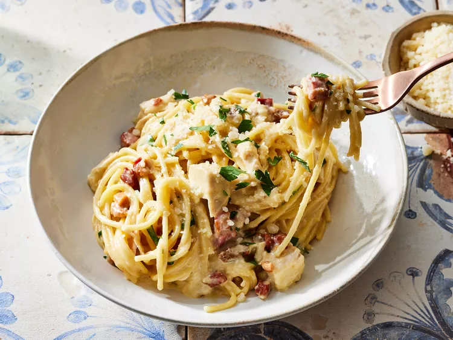

Pasta

Description
Ingridients
- 10 ounces diced pancetta
- 16 ounces spaghetti
- 4 large egg yolks
- 2 cups grated parmesan cheese
- 1 cup heavy cream
- 2 cups cooked chicken breast
- 1 tablespoon italian parsley
Steps
- Gather all ingredients. Preheat oven to 325 degrees F (165 degrees C). Coat a 9x13-inch baking dish with nonstick cooking spray.
- Cook pancetta in a medium skillet over medium-high heat until lightly browned and crisp, about 5 minutes. Set aside.
- Boil spaghetti in lightly salted water for 5 minutes. Drain pasta and reserve 2 cups pasta water.
- Meanwhile, add egg yolks to a large mixing bowl and whisk until smooth.
- Gradually pour 1 1/2 cups hot pasta water over egg yolks, whisking vigorously, making sure to whisk constantly so eggs do not scramble.
- Whisk in Parmesan cheese, then heavy cream.
- Add cooked pasta, pancetta, and chicken to the sauce, toss to combine. Transfer pasta mixture to prepared dish.